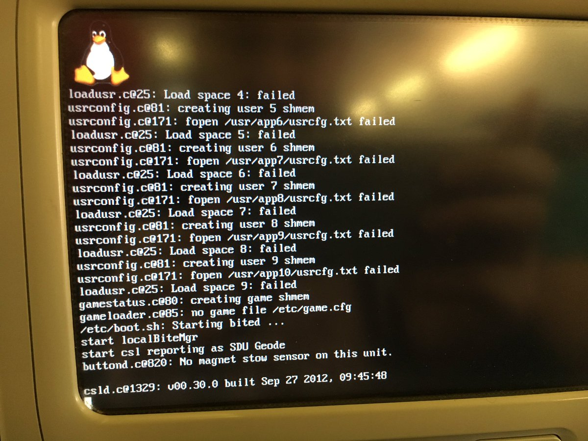

  	<div class="flex-wrap">
      
  	  <article class="tweet  " id="main">
  	    <p class="full_text">
  	      It's the year of Linux on the Seatback, right? <div class="gallery"><ul><li><a href="../../tweets_media/797791307364233216-CxJS9KtXUAAwLDZ.jpg"></a></li></ul></div>
  	    </p>
  	    <p class="created_at">
  	      11/13/2016, 5:20:44 AM
  	    </p>
  	    <p class="favorite_count">Favs: 24</p>
  	    <p class="retweet_count">Retweets: 8</p>
  	    <a class="permalink" href="../797791307364233216">link</a>
  	  </article>

  	</div>
  </div>
